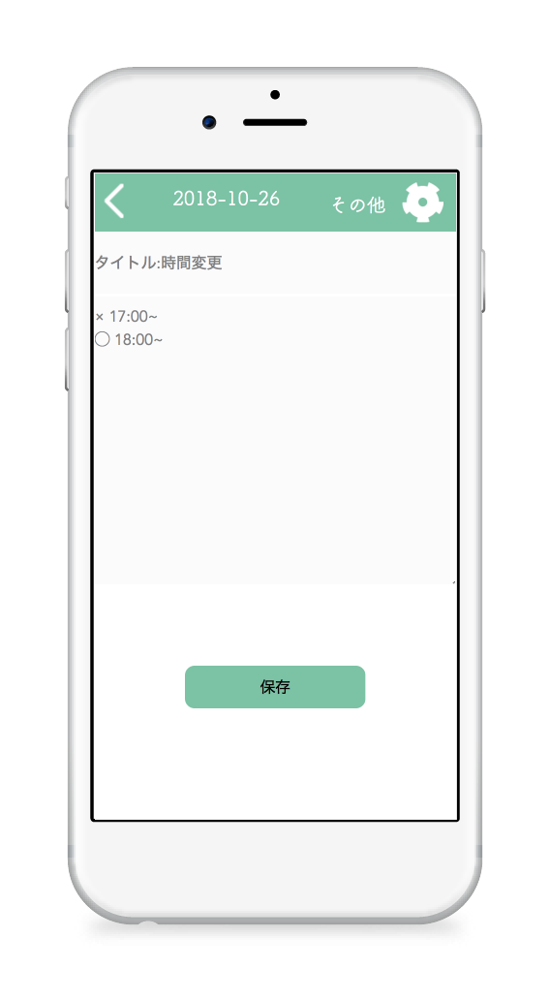
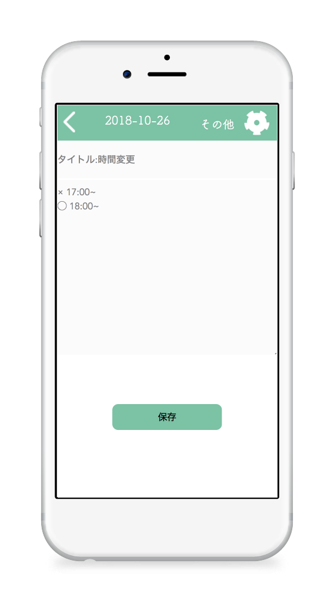

about
高村美紀(21)
名古屋市立大学
芸術工学部 情報環境デザイン学科
愛知県出身、在住の生粋の愛知県民。
パソコンを触って何か作るのが
好きです。
skill
works


contact
mino0730.t@gmail.com

monager
概要
制作期間: ３ヶ月
制作人数/担当: 一人/全て
使用言語: ruby on rails
デバイス: スマートフォン
url: https://monager.herokuapp.com
制作背景
名古屋市立大学芸術工学部の学生によるプロジェクトの成果発表・展示会、「卓展」にて制作。 初めてruby on railsを触り、初めて自分の手で作ったアプリです。管理系であればなんでもよかったので、 自分が欲しいと思ったアラームアプリを企画し、デザイン、コーディングまで一人で行いました。 先輩にたくさん助けてもらいながら完成させ、リリースまで行いました。
Morning × Manager をテーマに朝に弱い人や、家事をしている人にとって
一番忙しい時間である朝を効率的かつ充実して過ごすために管理してくれるアプリです。
朝の時間を曜日ごとにテンプレートを作って管理することができます。
朝、という時間にフォーカスするということで、朝確認したい1日の情報も確認できる機能もつけました。
TCalender
概要
制作期間: 1ヶ月
制作人数/担当: 一人/全て
使用言語: ruby on rails
デバイス: スマートフォン
url: https://t-calendar.herokuapp.com
制作背景
母の所属しているママさんバレーチームの練習で、日によって参加人数が変わるのでそれを把握するのが大変、とのことでそれを管理できるアプリを制作しました。 このアプリではユーザーがとてもはっきりしていたので、デザインや機能面で母の要望を確認しつつ制作しました。
 

メインのカレンダー画面で参加人数がパッとみて確認できるような直感的なデザインを意識しました。 また、人数だけでなく情報共有もしやすいような機能をつけました。
指差しチェッカー
概要
制作期間: ３ヶ月
制作人数/担当: ５人/アプリコーディング
使用言語: ruby on rails
デバイス: スマートフォン/mesh
url: https://yubisashi-checker.herokuapp.com
制作背景
大学の実習課題にて「暮らしを豊かにするIoT」というテーマにてグループで制作。デザイン、mesh、企画/プレゼン、コーディング（２人）のなかでコーディングの、主にバックエンドの部分を担当しました。
出かける時に窓を閉めたか、電気を消したかなどの確認を指差しして行うことで外でアプリでちゃんと消したかを確認できるアプリ。 指差し、という行動をすることで習慣づけによる認知症予防や、家族等が指差ししてるかを確認できるカレンダーをつけることで孤独死防止にも繋がるアプリです。 IoTということでアプリとmeshと繋げることに苦戦しました。 meshがもともと持つ機能にメールの送信があったので、メールを介してつなげました。 また、ターゲットが高齢者になるので簡潔な機能とページ遷移を意識しました。
ぐるぐる鬼ごっこ
概要
制作期間: 3ヶ月
制作人数/担当: 一人/全て
使用言語: unity（c＃）
デバイス: コンピューター
制作背景
大学の課題で「ソケット通信を用いたゲーム」というテーマのもと制作しました。 また、この作品で初めてunityに触れました。キャラクターはアセットストアのものを使わせていただきました。


4人対戦で最初にランダムで鬼が決まり、制限時間が終わった時に鬼だった人が負けになります。 ただし、特殊ルールとしてスペースキーを押すと、全員のカーソルキー操作がぐちゃぐちゃになります。（例えば上矢印を押したら右に動く） スペースキーは一人あたり5回まで押すことができ、マップ上に落ちているアイテムを拾えばそれを防ぐことができます。
portfolio site
概要
制作期間: 2ヶ月
制作人数/担当: 一人/全て
使用言語: html,css,js
デバイス: コンピューター
制作背景
名古屋市立大学芸術工学部の学生によるプロジェクトの成果発表・展示会、「卓展」にて制作。 css,jsなどのアニメーションを扱い、見る人が楽しめるサイト作りを目指しました。
スタイリッシュになりすぎないスタイリッシュをコンセプトとし、四角をメインにデザインしました。 また、トップページのアニメーションは特にこだわったので是非見ていただきたいです。